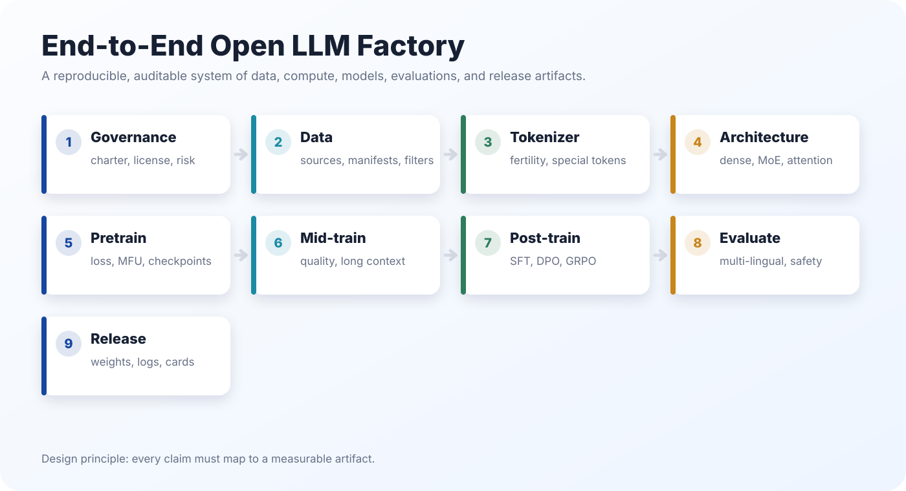

Trace the exact mixture
The public Training Data Collection records cycle-specific metadata, sampling and packing alongside the Catalogue.
OpenEuroLLM · Updated 5 October 2026
A practical, source-grounded blueprint for training, evaluating and releasing open multilingual foundation models.

Public artifact check · 5 October 2026
The guide now tracks published OpenEuroLLM experiments and tooling while keeping formal project deliverables distinct.
The public Training Data Collection records cycle-specific metadata, sampling and packing alongside the Catalogue.
The 256k v2 tokenizer documents multilingual, code, math and special-token tests. V1 and v2 are separate model inputs.
Prelude and a 9B SFT experiment are public. The 32B repository has no model card yet.
Use oellm-eval with pinned prompts, shot counts, metrics and revisions. A configured context length is not a verified capability.
Formal dataset and first-model milestones remain listed on the official deliverables page.
Interactive field guide
Follow a workflow, search for a tool, or filter by stage. Each entry explains what the resource does, what it produces, and what to verify before using it.
Choose a path
These are illustrative paths through public resources. They do not claim that a particular dataset was used for a particular checkpoint.
Repository & artifact directory
Checked against public repository READMEs and Hugging Face cards on 5 October 2026. Dataset inclusion in this directory does not establish use in a released model.
What it covers
Source registries, licensing, privacy review, quality filtering, deduplication, contamination control, and multilingual mixtures.
Tokenizers, dense baselines, MoE candidates, sparse attention, scaling-law experiments, HPC portability, checkpointing, and observability.
SFT, DPO, RLHF, GRPO/RLVR, reasoning data, agent/tool-use training, and regression testing after every capability stage.
Multilingual benchmarks, long-context tests, safety, model cards, dataset cards, reproducible recipes, and open artifact manifests.
Updated technical edition
The PDF includes the October artifact check, a repository field guide, three worked paths, reproducibility checklist and linked public sources.